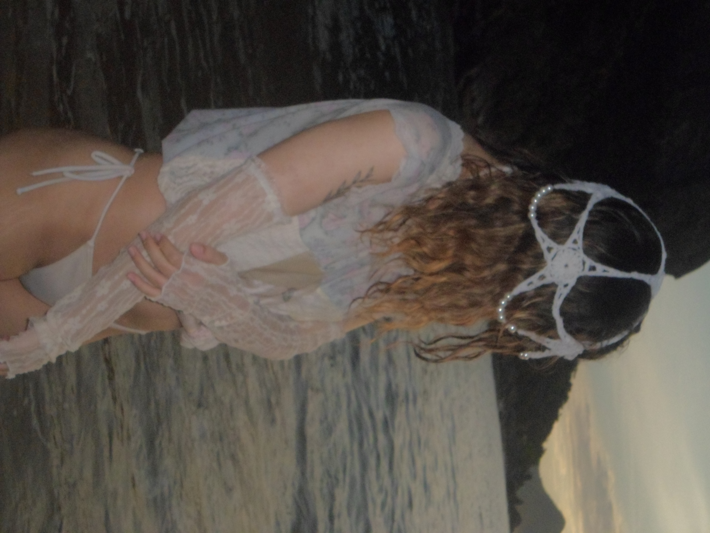
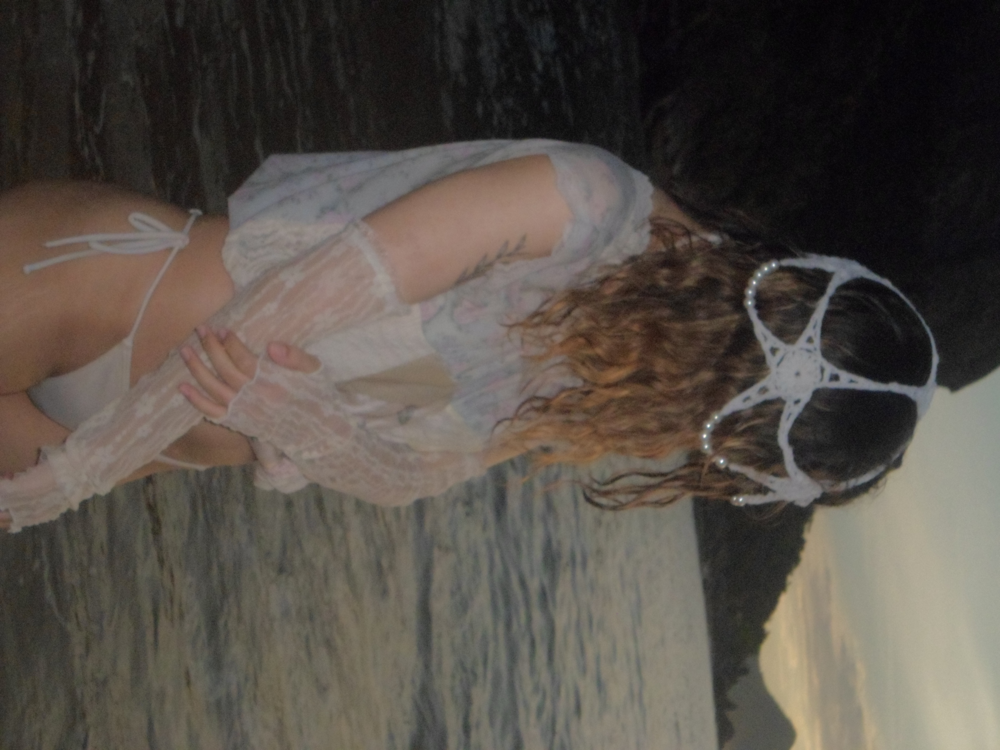
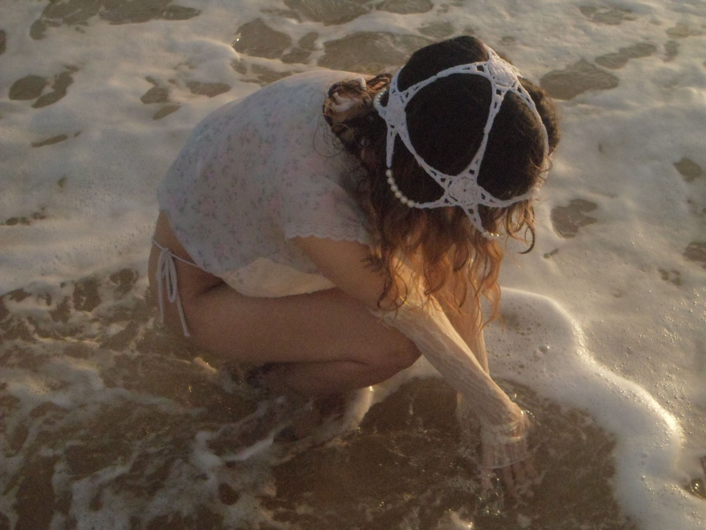
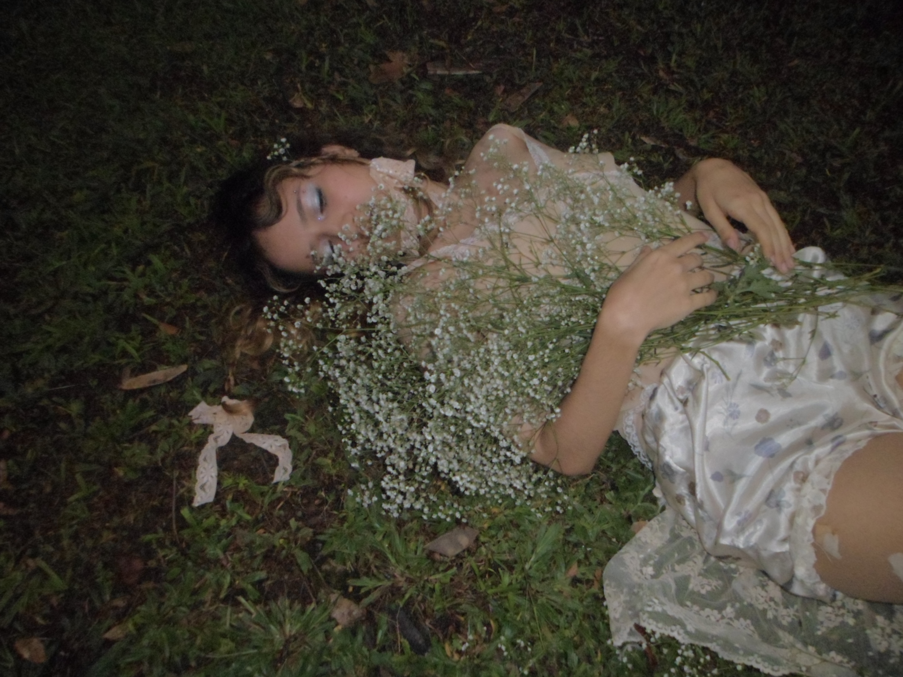
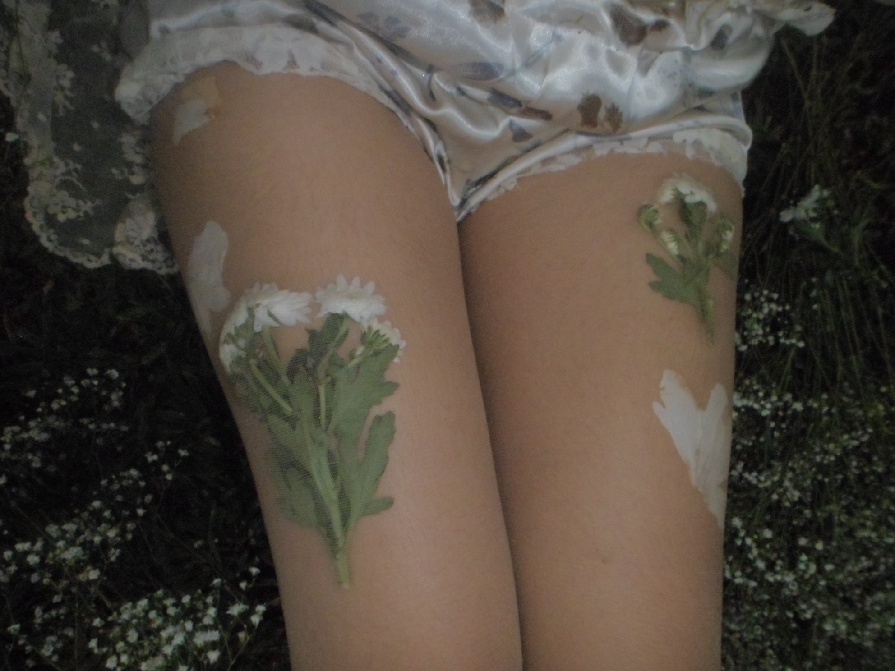
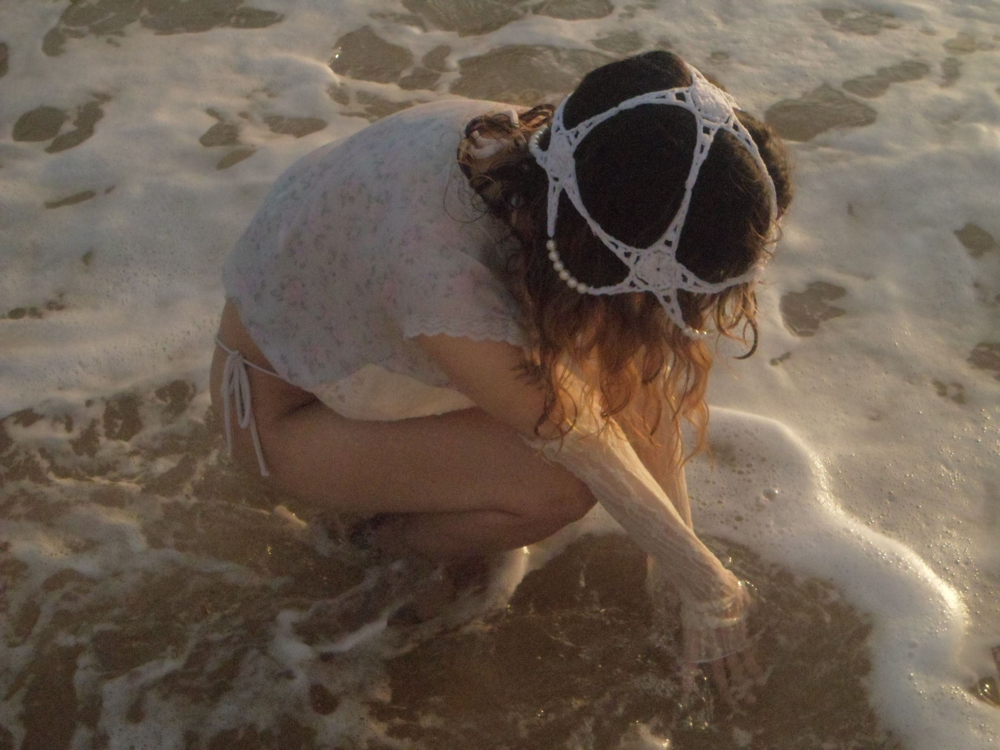
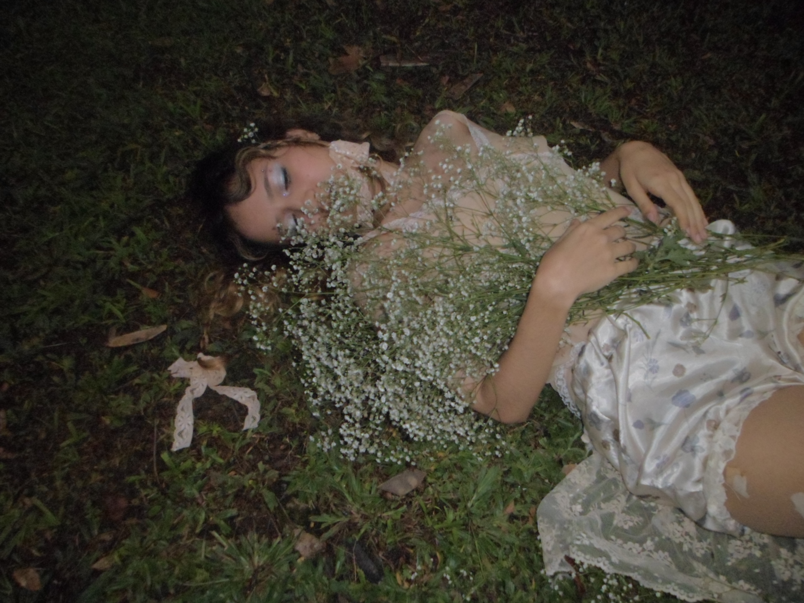
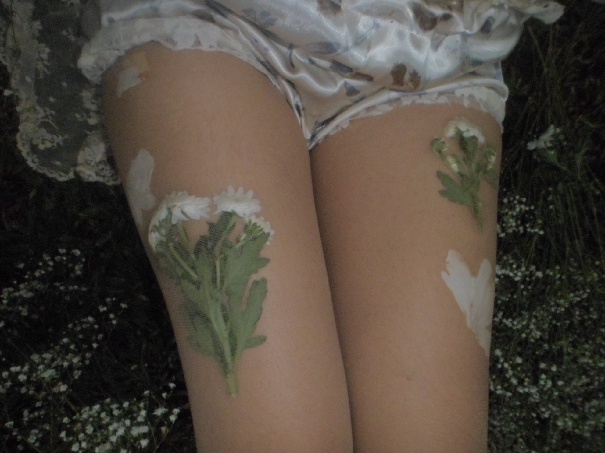

água viva
arte têxtil · fotografia
água viva é um projeto de conclusão de curso em design de moda que articula pesquisa,
experimentação têxtil e criação de imagem a partir da obra de ana mendieta. desenvolvido
ao longo de 2024, o trabalho parte de uma investigação sobre silhueta, corpo e paisagem,
com referência direta à série silueta, explorando temas como identidade, pertencimento,
natureza e metamorfose.

o projeto propõe um editorial de moda construído por meio de upcycling, redesign e técnicas
experimentais, utilizando peças preexistentes, rendas vintage, bordado com flores reais
e processos orgânicos como o eco print (tataki-zome). a construção da forma é tratada como
elemento central da narrativa, aproximando o vestir de um gesto performativo, em diálogo
com o espaço natural.

 


 







o título água viva, inspirado no livro homônimo de clarice lispector, orienta o trabalho
como um estado fluido e instável, em que matéria, corpo e imagem se transformam
continuamente. as fotografias foram realizadas em ambiente natural, combinando registros
em 35mm e câmera digital, reforçando a dimensão sensível e processual do projeto.
água viva investiga a roupa como meio de inscrição simbólica do corpo no mundo,
operando entre moda, arte e memória.
série fotográfica, 2024